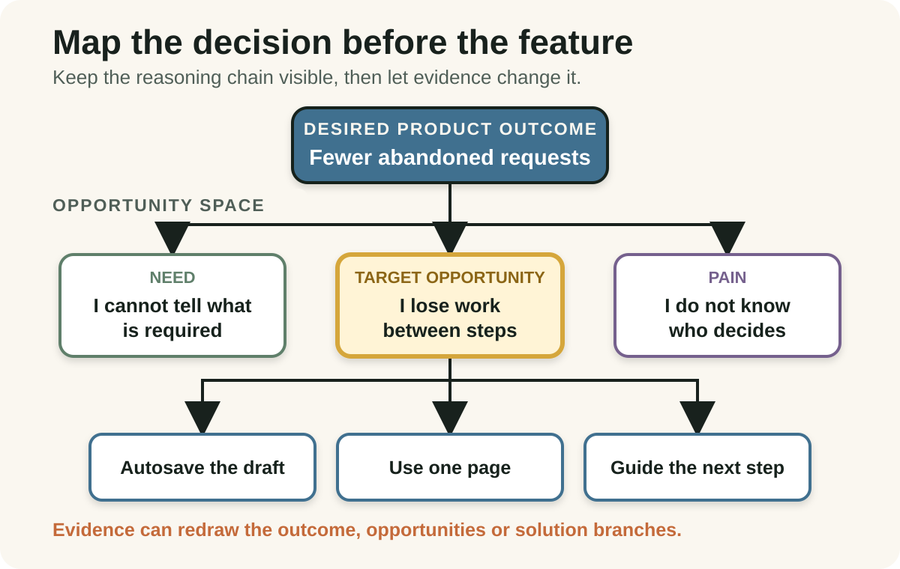
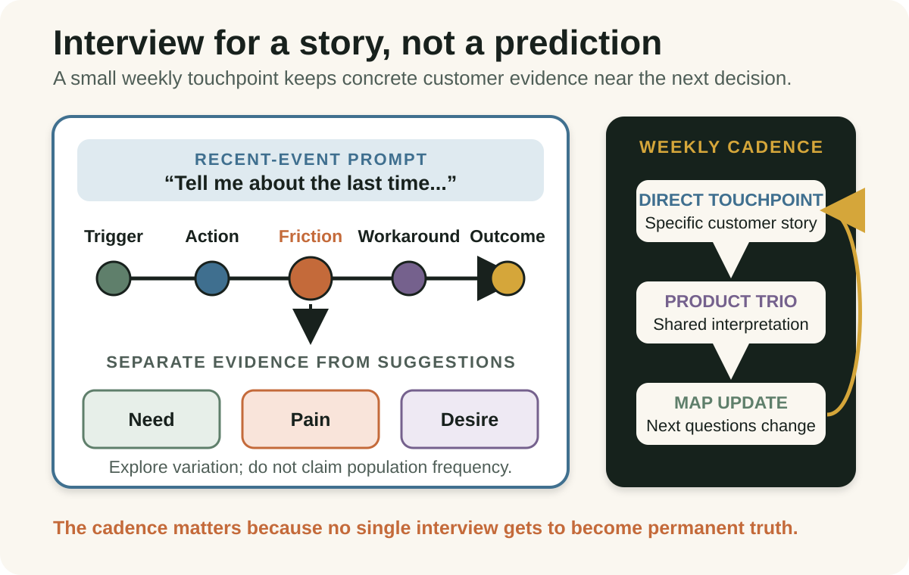
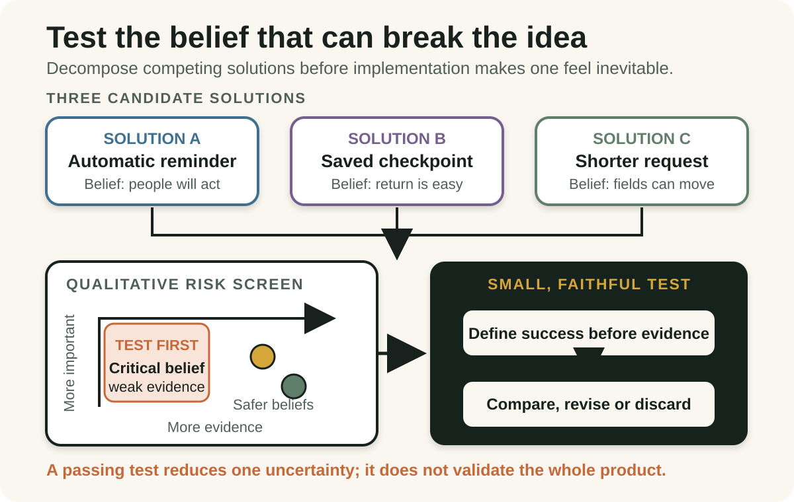

Daily lesson ·
Continuous Discovery Habits
Make product discovery a decision rhythm: connect a desired outcome to real customer opportunities, learn from recent stories and test the riskiest belief before building the whole solution.
Idea 1
Map opportunities before choosing solutions #
The idea
Torres starts discovery with a desired product outcome that the team can influence. An opportunity solution tree then connects that outcome to customer needs, pain points and desires, before branching from a chosen opportunity into several possible solutions and the assumptions those solutions depend on.
The tree preserves the reasoning between what the team wants to change and what it might build. It is not a fixed requirements hierarchy or an opportunity backlog to finish. As interviews and tests produce evidence, the opportunity space, target and solution branches can be redrawn.

Why it matters
Teams often debate a requested solution without agreeing on the change it should create or the customer experience it addresses. Keeping those links visible exposes solution fixation and gives new evidence somewhere useful to change the decision.
Apply it today
Choose one active feature request and write one observable customer behaviour or product outcome it is intended to influence.
Name the customer need, pain or desire between that outcome and the request, then sketch one materially different solution for the same opportunity.
Caveat or failure mode
A neat tree can make weak research look certain. It does not choose the right outcome, prove that an opportunity is common or calculate which branch will work. Keep the structure provisional, distinguish observed evidence from team inference and revise it when customer or outcome data disagrees.
Idea 2
Interview for a recent story, every week #
The idea
Torres defines continuous discovery as at least weekly customer touchpoints by the team building the product, using small research activities in pursuit of a desired product outcome. Frequent direct contact is a keystone habit because it keeps product decisions connected to recent customer evidence rather than occasional reports or remembered anecdotes.
Her story-based interview anchors the conversation in a specific past event. The interviewer traces what happened, what the person tried, where the experience became difficult and what they wanted, instead of asking whether they like an imagined feature. Across interviews, the team seeks variation in experiences; it does not claim that a small qualitative sample estimates population frequency.

Why it matters
Hypothetical preference questions invite politeness, prediction and solution bias. A specific recent story gives the team a sequence it can inspect, while regular contact prevents one memorable interview from becoming permanent truth.
Apply it today
Choose one decision and ask a relevant person, 'Tell me about the last time you tried to do this.'
Trace the trigger, steps, workarounds and outcome. Write one observed opportunity and one claim that still needs another source of evidence.
Caveat or failure mode
A past story is still a self-report shaped by memory, framing and who agreed to speak. Weekly interviews do not make a sample representative or replace observation, accessibility research, product data, support evidence or quantitative measurement. Interview for variation and match the method to the decision.
Idea 3
Test the risky belief, not the whole solution #
The idea
Torres asks teams to decompose each solution into assumptions that need to be true for it to succeed. The categories of desirability, viability, feasibility, usability and ethics act as prompts for finding hidden risk, not as boxes worth debating for their own sake.
The riskiest assumptions are both important to the solution and weakly supported. A focused prototype, one-question survey, data check or engineering spike can examine one such belief more quickly than building the entire idea. Evidence should compare several solutions, and one passing test is not proof that a complete product will create the outcome.

Why it matters
Whole-solution tests are slow and can produce an ambiguous verdict. A specific assumption makes the uncertainty and the required evidence visible, so the team can learn before implementation effort turns one idea into a commitment.
Apply it today
Take one preferred solution and complete the sentence, 'For this to succeed, it must be true that...' five times across customer, business, technical, use and harm concerns.
Choose the important belief with the weakest evidence. Write one observable signal, a small test and the decision that each plausible result would change.
Caveat or failure mode
A cheap test can be cheaply misleading when its participants, context, fidelity or success threshold do not represent the real risk. Avoid treating a positive signal as validation of the whole idea. Combine tests, look for disconfirming evidence and measure the shipped outcome after delivery.
Knowledge check · 6 questions
Learning check
Answer all 6, then check your answers. Your first result stays in this browser, and each explanation appears after you check. A 3-question review can appear on the homepage from tomorrow.
6 questions not yet answered.
Today's experiment · 10 minutes
Turn one feature request into a discovery decision
- Choose one active feature request and write the observable product outcome it is supposed to influence.
- Write one customer need, pain or desire supported by a recent story or other evidence. If none exists, mark that gap explicitly.
- Sketch the requested solution and one materially different alternative for the same opportunity.
- For each solution, write one critical assumption that currently has weak evidence.
- Choose the riskiest assumption and define one small test, one observable success signal and the decision that either result would change.
Observable result: You finish with a visible outcome-to-opportunity chain, two competing solutions and one testable belief instead of an unexamined feature commitment.
Retrieval practice
Spaced recall
- From Shape Up: how could an explicit appetite bound a discovery test without turning one solution into fixed scope?
- From Domain-Driven Design Distilled: which disagreement in domain language should be clarified before it is treated as a customer opportunity?
Verification
Source notes
These links support the attributed claims and edition details; applications and extensions are labelled in the lesson.
- Product Talk: official Continuous Discovery Habits book announcement and scope
- Open Library: 2021 first-edition publication record and ISBN
- Product Talk: continuous discovery definition and cadence
- Product Talk: opportunity solution tree structure and limits
- Product Talk: story-based interviewing and interviewing for variation
- Product Talk: assumption types, test methods and evidence cautions
- Product Talk: case study on the learning tax and local adaptation
One-sentence takeaway